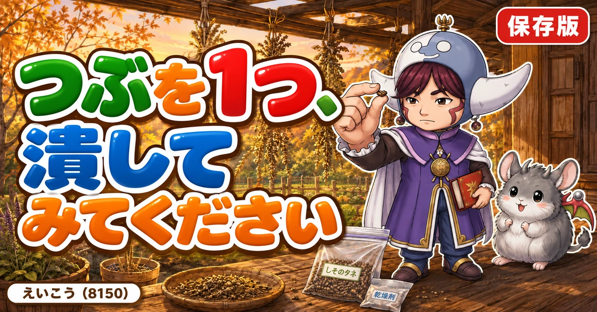
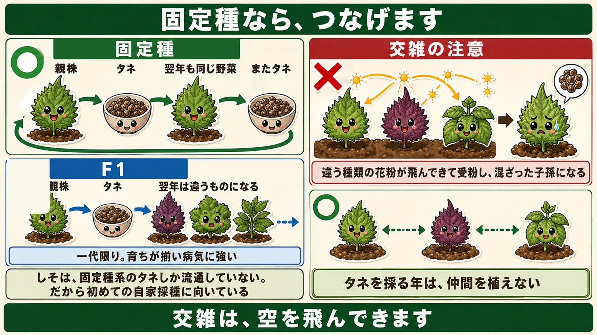
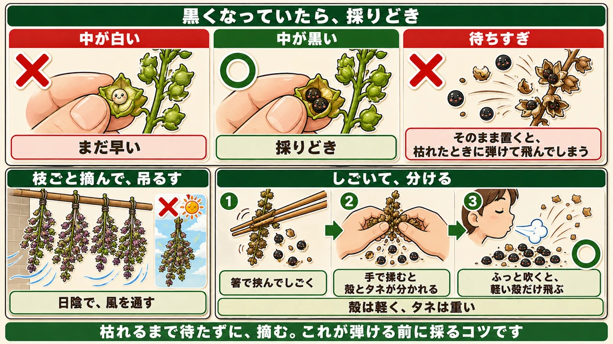
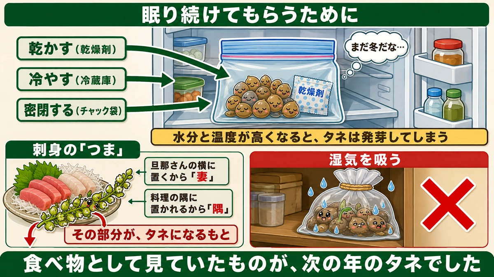

自家採種のやり方｜固定種とF1の見分け方・交雑・野菜別の採りどき・保存と発芽の確かめ方

どうも、8150（えいこう）です🌱 家庭菜園歴8年、理科の教員免許を持っていて、有機・無農薬で野菜を育てています。
📖 この記事の目次
この記事で分かること
- 自分の畑で育てた野菜から種を採って、次の年にまくことを「自家採種（じかさいしゅ）」と言います。
- 種を採るなら、親と同じ性質が出やすい「固定種」が向いています。種袋に「交配」と書かれた「F1（一代交配種）」は、種は採れても、親と同じ野菜になるとはかぎりません。
- 同じなかまの野菜が近くで花を咲かせていると、花粉が混ざって「交雑（こうざつ）」します。離して植えるか、花の時期をずらすのが基本です。
- 採りどきは、食べごろよりずっと後。さやや穂が茶色く乾いて、中の種が色づいてからです。
- 採った種は、よく乾かして、湿気・光・暑さを避けて保存します。
- まく前に、湿らせた紙の上で芽が出るか確かめておくと安心です。
野菜づくりに慣れてくると、「この野菜、来年もまた育てたいな」と思うことがありますよね。毎年種を買うのもいいですが、自分の畑から種を採って、またまく。これができると、畑の楽しみがぐっと広がります。
でも、「どの野菜でも採れるの？」「いつ採ればいいの？」「採った種はどうやってしまっておくの？」と、分からないことも多いと思います。
安心してください。自家採種は、ポイントさえ押さえれば、思っているよりずっと簡単です。この記事では、種を採る前の準備から、野菜ごとの採り方、保存、まく前の確かめ方まで、順番に書いていきます。
早見：自家採種の基本（ひと目で分かる目安）
種を採りやすい野菜・むずかしい野菜
- 採りやすい：しそ、えごま、バジル、春菊、豆類（えんどう・絹さや・そら豆・いんげん・枝豆）、落花生、オクラ
- ひと手間いる：ネギ（ネギ坊主から採る）、のらぼう菜などの菜の花のなかま、かぼちゃ、うり類
- 種より別の増やし方が向いている：いちご（親株から伸びるつるで増やす）、じゃがいも（種いもで増やす）、里芋・しょうが（種いもで増やす）
種袋の表示で見分ける
- 「固定種」「在来種」と書かれている：自家採種に向いている
- 「○○交配」「F1」と書かれている：種は採れても、親と同じになるとはかぎらない
- はっきり書かれていない：お店の人や、種苗会社の説明を確かめる
作業の流れ
- まく前：固定種を選ぶ。同じなかまの野菜を近くに植えない
- 育てている間：元気で、形のよい株を「種用」に決めて、印をつけておく
- 花が終わったら：種用の株は収穫せずに残す
- さやや穂が茶色く乾いたら：晴れた日に採る
- 採ったら：さらに乾かして、殻やごみを取り除く
- しまうとき：乾いた入れ物に、乾燥剤と一緒に入れて、涼しく暗い場所へ
- まく前：湿らせた紙で芽が出るか確かめる
いちばん大事なこと
- 食べごろで採らない。種は、もっと後まで待つ
- でも、待ちすぎると、さやがはじけたり穂から落ちたりする
- 採ったら、とにかくよく乾かす

作業の手順
ここからは、種を採るまでの流れを、順番に書いていきます。野菜ごとのくわしい採り方は、この後の章でまとめています。
手順1：固定種を選ぶ
自家採種をしようと思ったら、まず種選びの段階から考えておきます。
種袋の裏を見てください。「○○交配」と書いてあったら、それはF1（一代交配種）です。F1は、性質のちがう2つの親をかけ合わせて作った種で、1代目はそろってよく育ちます。でも、そこから採った種をまくと、親の性質がばらばらに出てきて、同じ野菜になるとはかぎりません。
一方、「固定種」や「在来種」と書かれているものは、何代も種を採り続けて、性質がそろってきたものです。こちらは、採った種をまいても、親に近い野菜が育ちやすいんですね。
ここは、種袋の書き方がメーカーによって少しずつ違うこともあるので、迷ったら、お店の人に「これ、種を採っても同じものが育ちますか？」と聞いてみるのが確実です。
ちなみに、F1の種を採ってまいても、何かが育たないわけではありません。どんな野菜が育つか分からない、ということを楽しめるなら、試してみるのもありです。ただ、来年も同じ味を楽しみたいなら、固定種を選んでおくのが近道です。
手順2：交雑しないように植える場所を考える
同じなかまの野菜は、花粉が混ざると「交雑」します。交雑した種をまくと、親とは違う性質の野菜が育つことがあります。
たとえば、こんな組み合わせは混ざりやすいと言われます。
- 青じそと赤じそ、えごま（同じなかまです）
- トウモロコシ同士（品種が違っても混ざります）
- かぼちゃ同士、うり同士
- 菜の花のなかま同士（白菜・小松菜・かぶ・菜の花など）
対策は、大きく2つあります。
- 離して植える：同じなかまを、なるべく遠くに植えます
- 花の時期をずらす：種まきの時期をずらして、花が同じころに咲かないようにします
どれくらい離せば大丈夫か、という距離は、野菜や風、虫の通り道によって変わるので、一律には言えません。家庭菜園の広さでは、離すだけでは限界があることも多いので、「種を採りたい野菜は、そのなかまを1種類だけにする」のがいちばん確実です。
市民農園のように区画がとなり合っている場所では、自分の区画だけでなく、まわりの区画の花粉も飛んできます。そこは気にしすぎず、「多少混ざることもある」くらいの気持ちで楽しむのも1つの考え方です。
手順3：種を採る株を決めて、印をつける
育てている間に、「この株から種を採ろう」という株を決めておきます。
選ぶときは、こんな株がおすすめです。
- 元気で、病気が出ていない
- 形がよく、その野菜らしい特徴がよく出ている
- 味がよかった（豆などは、実際に食べてみて決められます）
決めたら、支柱にひもを結んだり、名札を立てたりして、うっかり収穫してしまわないように印をつけておきます。これ、ほんまに大事です。印がないと、収穫のときについ採ってしまうんですよね。
豆やオクラのように、1つの株にたくさん実がなる野菜は、株ごとではなく「このさやは種用」と、さやに印をつけておくやり方もあります。
手順4：花が終わったら、そのまま残す
種用の株は、食べごろになっても収穫せずに、そのまま置いておきます。
ここが、自家採種でいちばんがまんのいるところです。食べごろのおいしそうな実を見送って、さらに何週間も畑に置いておくことになります。そのぶん、畑の場所もふさがります。種を採りたい株は、畑のはしの、じゃまにならない場所に植えておくと気が楽です。
手順5：さやや穂が茶色く乾いたら採る
食べごろを過ぎると、実やさやはだんだん色が変わって、やがて茶色く乾いてきます。中の種も、緑や白から、その野菜本来の色（黒・茶色など）に変わっていきます。
これが、種の採りどきです。
採るのは、晴れた日がおすすめです。雨のあとや朝露がついているときに採ると、湿ったまま持ち帰ることになり、カビの原因になります。
ただし、待ちすぎにも注意してください。しそや菜の花のなかま、豆の一部は、乾きすぎると、さやがはじけたり、穂から種がこぼれたりします。茶色くなりかけたら、毎日のぞいて、ちょうどいいときに採ってください。
手順6：家の中でさらに乾かす
採ってきたさやや穂は、そのまま家の中や軒下で、さらに乾かします。
- 穂やさやを、ざるや新聞紙の上に広げる
- または、束ねて、風通しのよい日陰につるす
直射日光に長く当てたり、熱がこもる場所に置いたりするのは避けます。種が熱で弱ってしまうことがあるからです。つるしておく場合は、下に紙や箱を置いておくと、こぼれた種も受け止められます。
手順7：種を取り出して、ごみを分ける
よく乾いたら、さやから種を取り出したり、穂をもんで種を落としたりします。
細かい種は、殻やごみが混ざります。ふるいにかけて大きなごみを除き、そのあと、軽く息を吹きかけたり、うちわであおいだりすると、軽い殻だけが飛んでいきます。種は重いので、下に残ります。
手順8：もう一度乾かしてから保存する
取り出した種は、もう一度、数日ほど広げて乾かしてから保存します。まだ緑っぽさが残っている豆などは、しっかり乾くまで待ってください。
手順9：袋に名前と日付を書く
保存するときは、袋や入れ物に、野菜の名前と、採った年月を書いておきます。
自家採種の種は、見た目だけでは何の種か分からなくなることが、ほんまによくあります。特に、しそとえごま、いろいろな豆など、似た種は要注意です。

野菜別の採り方
ここからは、野菜ごとの採り方です。育てている野菜のところだけ読んでも大丈夫です。
しそ・えごま
しそは、種を採るのがいちばん簡単な野菜の1つです。
- 夏の終わりから秋に、白い小さな花が穂になって咲きます
- 花が終わると、穂についた小さな実の中で種が育ちます
- 実をつぶして、中の種が黒くなっていたら採りどき。まだ白っぽいなら、もう少し待ちます
- 黒くなってきたら、穂ごと摘んで、日陰で乾かします
- 乾いたら、穂をもんで種を落とし、ふるいと息で殻を飛ばします
しそは、こぼれた種から、次の年に勝手に芽が出てくることも多い野菜です。わざわざ採らなくても、穂をそのまま畑に残しておけば、春に芽が出てきます。
ただ、市民農園など借りている畑では、こぼれ種で翌年あちこちから芽が出ると、次に使う人が困ることもあります。種が落ちる前に片づける、という決まりの農園もあるので、確かめておいてください。
青じそ、赤じそ、えごまは同じなかまなので、近くに植えると混ざることがあります。赤じその色が薄くなったり、香りが変わったりしたら、交雑を疑ってみてもいいかもしれません。ただ、赤じその色は育つ環境でも変わることがあるので、色だけで交雑と決めつけることはできません。
バジル
バジルも、しそと同じなかまで、採り方もよく似ています。
- 花が咲き終わって、穂が茶色く乾くまで待ちます
- まだ青々としているうちに採っても、種は熟していません
- 乾いた穂を手でもむか、すり合わせて、種を落とします
春菊
春菊は、葉を食べる野菜ですが、そのまま育てておくと、黄色や白の菊のような花が咲きます。
- 花を摘まずに、そのまま枯れるまで置いておきます
- 花が茶色く枯れて乾いたら、花ごと摘み取ります
- 乾かして、もむと種がとれます
畑に空いている場所があるなら、何株か花を咲かせておくだけで、次の年の種になります。花もきれいなので、それだけでも楽しめますよ。
豆類（えんどう・絹さや・スナップえんどう・そら豆・いんげん）
豆は、種を採るのがとても分かりやすい野菜です。食べている豆そのものが種だからです。
- 収穫のときから、形のよいさやを「種用」に決めて残しておきます
- さやが茶色くなって、カラカラに乾くまで待ちます
- 晴れた日に、乾いたさやを摘み取ります
- さやから豆を取り出します
- まだ緑っぽさが残る豆は、さらに乾かします
さやの中の豆が、緑のままだと、まだ熟していません。カラカラに乾いた、かたい豆になっていれば大丈夫です。
枝豆
枝豆は、若い大豆を食べているものです。だから、種にするなら、枝豆として収穫せずに、大豆になるまで待ちます。
- 種用の株は、枝豆の収穫どきを過ぎても、そのまま畑に置いておきます
- 葉が落ちて、さやが茶色く乾いたら、株ごと抜いて乾かします
- 乾いたさやから、大豆を取り出します
ふつうの品種なら、毎年種を買ったほうが手軽、という考え方もあります。でも、地域に昔からある品種や、なかなか手に入らない品種なら、自分で種をつないでいく価値があります。何年も種を採り続けて、毎年同じ枝豆を育てている農家さんもいます。
オクラ
オクラは、ふだんは若いさやを食べますが、そのまま置いておくと、さやがどんどん大きく、かたくなっていきます。
- 種用にするさやを決めて、収穫せずに残しておきます
- さやが茶色く乾いて、かたくなるまで待ちます
- 乾いたさやを割ると、中から丸い種がころころ出てきます
食べる実と種用の実は、はっきり分けておくのがコツです。種用のさやに印をつけておかないと、うっかり大きくなりすぎた実と区別がつかなくなります。
落花生
落花生も、食べている豆が種です。
- 収穫したら、形がよく、中身がよく詰まったものを種用に選びます
- 種用のものは、水で洗いません（食べる用とは分けておきます）
- 殻ごと、よく乾かします
- 高温になる場所は避けて、保存します
まくときは、殻から出して、薄皮をつけたまままきます。
ネギ（長ネギ）
ネギは、春になると、茎の先に「ネギ坊主」と呼ばれる丸い花を咲かせます。
- 種を採るなら、ネギ坊主を摘まずに、咲かせたままにしておきます
- 花が終わって、ネギ坊主が茶色っぽくなり、中に黒い種が見えたら採りどきです
- 種がこぼれやすいので、ネギ坊主ごと切り取って、袋をかぶせて乾かすとこぼれません
ただし、ネギには、株が分かれて増える種類（分けつするネギ）もあります。そういう種類は、種を採るより、株を分けて植え直すほうが簡単です。その場合は、ネギ坊主を早めに摘んで、株を太らせます。
種で増やすのか、株で増やすのかで、ネギ坊主の扱いが逆になるので、育てているネギがどちらなのかを確かめてください。
菜の花のなかま（のらぼう菜など）
のらぼう菜のように、昔から地域で種を採り続けてきた菜の花のなかまもあります。春に菜の花を咲かせたあと、さやがついて、そのさやが茶色く乾いたら種が採れます。
ただ、菜の花のなかまは、白菜・小松菜・かぶなど、いろいろな野菜と交雑しやすいです。まわりで同じなかまの花が咲いていないかに気をつけてください。
かぼちゃ・うり類
かぼちゃやうりのなかまは、よく熟した実から種を取り出します。
- 種用の実は、完熟するまで株につけておきます
- 実を割って、種を取り出します
- まわりのわたやぬめりを落として、よく乾かします
かぼちゃ同士、うり同士は混ざりやすいので、ほかの品種と近くで育てていた場合は、親と同じものが育つとはかぎりません。
種より別の方法で増やすもの
- いちご：種から育てると、親と同じいちごになる保証がありません。親株から伸びる「ランナー」という茎の先にできる子株で増やすのが一般的です
- じゃがいも：花のあとにトマトのような実がつくことがあり、中に種があります。でも、日本の暑くなる気候では、種から育てるのはむずかしいと言われます。ふつうは種いもで増やします
季節ごとの採りどきカレンダー
地域や、種をまいた時期によって前後しますが、だいたいの目安です。
- 春の終わり〜初夏（5〜6月ごろ）：えんどう、絹さや、スナップえんどう、そら豆。春に花を咲かせたネギのネギ坊主、菜の花のなかま、春菊も、このころ種になります
- 夏（7〜8月ごろ）：かぼちゃ、うり類。完熟した実から取り出します
- 秋（9〜11月ごろ）：しそ、えごま、バジル、オクラ、落花生、枝豆を大豆まで育てたもの、いんげん
春の豆と、秋のしそ。この2つの時期を覚えておくと、1年の流れがつかみやすいです。
トマト・なす・きゅうりは？
トマトやなす、きゅうりも、完熟した実の中に種があります。ただ、実の中の種はぬめりに包まれていて、取り出し方や洗い方に少しコツがいります。また、お店で売られている苗や種はF1が多いので、親と同じものになるとはかぎりません。
この記事では、まずは手軽な野菜から始めてもらうために、くわしい取り出し方は扱っていません。慣れてきたら、固定種のトマトやなすで挑戦してみるのも楽しいと思います。
保存のしかた
種の大敵は「湿気・光・暑さ」
種は、生きています。湿気があると、カビが生えたり、勝手に芽を出そうとしたりします。暑い場所や光の当たる場所に置いておくと、だんだん弱っていきます。
だから、保存のポイントは3つです。
- よく乾かす
- 光を避ける
- 涼しい場所に置く
入れ物と乾燥剤
- 紙の封筒や、口を閉じられるビニール袋に入れます
- お菓子などに入っている乾燥剤を一緒に入れておくと安心です
- 入れ物も、乾いたものを使います。入れ物が湿っていると、せっかく乾かした種が湿気を吸ってしまいます
置き場所
- 冷蔵庫に入れる、という説明がよくあります。乾燥剤と一緒に密閉して、冷蔵室に入れておきます
- 落花生などは、涼しくて暗い場所なら、常温でも大丈夫という説明もあります。夏の暑い時期だけ冷蔵庫に移す、という考え方です
冷蔵庫から出すときは、袋を開ける前に、しばらく室温にもどしてから開けると、袋の中に水滴がつきにくくなります。

まく前に、発芽を確かめる
自家採種の種は、中にどうしても芽が出ないものが混ざります。まく前に、どれくらい芽が出るか確かめておくと、まく量の目安になります。
湿らせた紙でためす
- キッチンペーパーなどを湿らせて、浅い入れ物に敷きます
- 種を何粒か並べます
- ふたやラップを軽くかけて、暖かい場所に置きます
- 数日〜1週間ほどで、根や芽が出るか見ます
ここで大事なのは、水を入れすぎないことです。種は、芽を出すのに水だけでなく、空気（酸素）も必要です。水にどっぷりつかっていると、息ができなくなってしまいます。紙が湿っているくらいで十分です。
光が必要な種、暗いほうがいい種
種によって、芽を出すのに光が必要なもの（好光性）と、暗いほうがいいもの（嫌光性）があります。たとえば、しそやにんじんは光があったほうが芽が出やすい、と言われます。発芽を確かめるときも、ぴったり暗くしないほうがいい種があることを覚えておいてください。
根が出た種を、そのまま植えることもできる
紙の上で根が出てきた種は、そのままポットや畑に植えることもできます。芽が出るか分からない種を何粒もまくより、確実に動き出した種だけを植えられるので、むだがありません。
落花生などは、前の年に採った種を水にしばらくつけて、根が出てくるのを確かめてから植える、というやり方もあります。
ただ、大根やにんじんのような根を食べる野菜は、植え替えると根が分かれたり曲がったりしやすいので、根が出た種を移し植えるのは避けて、畑に直接まいてください。
失敗の見分け方
種がスカスカ、軽い
熟す前に採ってしまった可能性があります。指でつまんでつぶれるような種や、水に入れて浮く種は、中身が育っていないことが多いです。次は、もう少し待ってから採ってみてください。
さやがはじけて、種がない
待ちすぎです。しそや菜の花のなかま、豆の一部は、乾ききるとさやがはじけたり、穂から種がこぼれたりします。茶色くなりかけたら、毎日のぞくようにします。心配なら、穂やさやに紙袋や不織布の袋をかぶせておくと、こぼれても受け止められます。
保存中にカビが生えた
乾かし方が足りなかったか、入れ物が湿っていた可能性があります。カビが生えた種は、芽が出にくくなったり、病気を持ちこんだりするので、使わないほうが安心です。
まいたら、親と違う野菜が育った
F1の種だったか、ほかの品種と交雑した可能性があります。種袋の表示や、まわりに何が植わっていたかを思い出してみてください。
ほとんど芽が出なかった
- 保存中に湿気や暑さで弱った
- 種の寿命が近かった
- まく時期や温度、水の量が合っていなかった
芽が出ない理由は、種の寿命だけではありません。空気・水・温度、種によっては光の条件がそろっているかも見直してください。
説明が分かれていること
保存は冷蔵庫か、常温か
- 乾燥剤と一緒に密閉して、冷蔵庫に入れるのがいい、という説明
- 涼しくて暗い場所なら常温でよく、暑い時期だけ冷蔵庫、という説明
野菜の種類や、住んでいる地域の暑さによって変わります。夏に室温が高くなる家なら、冷蔵庫に入れておくほうが安心です。
落花生は、網の袋か、密閉か
- 殻つきなら網の袋（ネット）、殻から出したらビニール袋、という説明
- 網の袋は湿気を吸いやすいので、密閉したほうがいい、という説明
殻つきかどうか、どれくらい乾いているかで、ちょうどいい入れ物が変わります。どちらにしても、よく乾かしてから、というのが前提です。
種の寿命は何年か
種の寿命は、野菜の種類によってかなり違います。
- ネギ、玉ねぎ、にんじんなどは寿命が短く、1〜2年くらいで芽が出にくくなると言われます
- なす、トマト、かぼちゃ、きゅうりなどの実を食べる野菜は寿命が長めで、数年もつと言われます
- 葉物は、その中間くらいと説明されることが多いです
ただ、何年もつかの数字は、説明する人によってばらつきがあります。また、同じ種でも、涼しく乾いた場所に置いたか、暑い物置に置いたかで、ずいぶん変わります。寿命の数字より、まく前に発芽を確かめるほうが確実です。
交雑は、どこまで気にするか
- 固定種を守るなら、同じなかまの品種は1つにしぼる、という考え方
- 食べる用の品種同士なら、多少混ざっても気にせず楽しむ、という考え方
どちらが正しいということはありません。その品種をずっと守っていきたいのか、毎年おいしいものが採れればいいのか、目的によって決めてください。
トウモロコシは、今年の粒にも影響が出る
多くの野菜では、交雑の影響が出るのは、その種をまいた次の年です。でも、トウモロコシは例外で、ほかの品種の花粉がかかると、今年食べる粒の色や甘さが変わることがあります。
だから、トウモロコシは、種を採るつもりがなくても、品種を1つにしぼるか、種まきの時期をずらして、花の時期が重ならないようにする工夫がすすめられています。
よくある質問
Q. F1の種からは、種が採れないのですか？
A. 採れることが多いです。ただ、そこからまいた野菜は、親とは違う性質が出やすく、大きさや味がばらばらになります。「種が採れない」ではなく、「同じものになるとはかぎらない」と考えてください。
Q. スーパーで買った野菜から種は採れますか？
A. 採れる野菜もありますが、市販の野菜の多くはF1なので、親と同じものになるとはかぎりません。また、熟す前に収穫されているものが多いので、種が十分に育っていないこともあります。
Q. 種は何粒くらい採っておけばいいですか？
A. 次の年にまく量より、多めに採っておくと安心です。芽が出ないものも混ざるので、必要な量よりかなり多めに採っておくと、まき直しにも対応できます。
Q. 種を採る株は、1株だけでいいですか？
A. 1株からでも種は採れます。ただ、何年も同じ品種を続けていくなら、何株かから採っておくほうが、性質がかたよりにくいと言われます。最初は気にしすぎず、元気な株を何株か選んでおけば十分です。
Q. 種用の株を残すと、畑がふさがって困ります
A. そうなんです。種を採るまでには、食べごろからさらに何週間もかかるので、そのあいだ場所がふさがります。種を採りたい野菜は、最初から畑のはしや、次の作付けにじゃまにならない場所に植えておくのがおすすめです。豆やオクラのように、1株に実がたくさんなる野菜なら、株全部ではなく、何本かのさやだけ残す方法もあります。
Q. 種に虫がついていました
A. 豆などは、保存中に虫が出てくることがあります。穴のあいた豆や、中が食べられている豆は、芽が出にくいので取り除いてください。よく乾かしてから密閉し、涼しい場所に置くと、虫も出にくくなります。
Q. 採った種は、いつまくのがいいですか？
A. その野菜のふつうの種まき時期にまきます。採ったばかりの種は、すぐにまいても芽が出にくいものもあるので、次の季節まで保存してからまくのが基本です。しそのように、こぼれ種で春に芽が出るものは、自然の流れにまかせてもかまいません。
Q. 去年採った種が残っています。まいて大丈夫ですか？
A. まず、湿らせた紙で発芽を確かめてみてください。芽がよく出るなら、そのまま使えます。芽の出が悪いときは、多めにまくか、新しい種と合わせて使います。
Q. 採った種を、人にあげてもいいですか？
A. 家族や友だちに分けて楽しむ、というのはよくある話です。ただ、品種によっては、種や苗の扱いに決まりがあるものもあります。人に分けたり売ったりするときは、その品種の扱いを確かめてからにしてください。
Q. こぼれ種から出た芽は、使ってもいいですか？
A. しそなどは、こぼれ種から出た芽をそのまま育てることができます。ただ、まわりに同じなかまの野菜があった場合は、交雑している可能性もあります。
Q. 種を採ると、その土地に合った野菜になりますか？
A. そう言われることもありますが、必ずそうなるという保証はありません。何年も種を採り続けていくうちに、その畑でよく育った株の種が残っていく、という考え方です。気長に楽しんでください。
学ぶ🔬 なぜ固定種なら、親と同じものが育つのか
ここからは、自家採種のしくみについて、少しだけ深く書いておきます。読み飛ばしても大丈夫です。
F1は「1代目だけ」そろう
F1は、性質のちがう2つの親をかけ合わせた、1代目の種です。たとえば、「病気に強い親」と「実が大きい親」をかけ合わせると、両方のよいところを持った1代目ができます。しかも、1代目は、どの株もそろって同じように育つ、という性質があります。
ところが、その1代目から採った種（2代目）をまくと、親の性質がばらばらに分かれて出てきます。病気に強いけど実が小さいもの、実は大きいけど病気に弱いもの、という具合です。これが、F1から採った種をまいても同じものが育たない理由です。
固定種は、何代もかけて「そろえた」もの
固定種は、何年も、何代も、よい株から種を採り続けて、性質がそろうようにしてきた品種です。だから、そこから採った種をまいても、親と同じような野菜が育ちやすいんですね。
地域で昔から種を採り続けてきた「在来種」も、このなかまです。その土地の気候に合ったものが、長い時間をかけて選ばれてきました。
なぜ交雑すると、性質が変わるのか
花は、花粉がめしべにつくことで種ができます。このとき、同じ株の花粉がつくこともあれば、風や虫に運ばれて、ほかの株の花粉がつくこともあります。
ほかの品種の花粉がつくと、できる種は、その2つの品種をかけ合わせたものになります。つまり、自分で知らないうちに「交配」が起きてしまうわけです。その種をまくと、どちらの親とも違う野菜が育つことがあります。
多くの野菜では、交雑しても、その年に食べる実そのものには影響が出ません。実の部分は、母親の株の体でできているからです。影響が出るのは、その実の中にある種、つまり次の世代です。
トウモロコシが例外なのは、食べている粒の一部が、花粉の影響を受けてできる部分だからです。だから、今年食べる粒の色や甘さが変わることがあるんですね。
いちごやじゃがいもを種から育てない理由
いちごは、種から育てると、親とは違ういちごになることが多いです。いちごの品種は、複雑なかけ合わせで作られているので、種をまくと性質がばらばらに出てしまいます。だから、親株から伸びるランナーの先にできる子株、つまり親とまったく同じ性質を持つ「分身」で増やすんです。
じゃがいもも同じで、種いもで増やすのは、親とまったく同じ性質を引き継げるからです。種から育てると、どんないもになるか分からないうえに、育てるのにも時間がかかります。
なぜ晴れた日に採るのか
雨のあとや朝露がついているときに採ると、さやや穂の表面がぬれたままになります。そのまま袋に入れたり、積み重ねて置いたりすると、乾くまでに時間がかかって、そのあいだにカビが生えやすくなります。
晴れた日の、露が乾いた昼前後に採ると、持ち帰ったあとの乾燥がぐっと楽になります。種にとって湿気がいちばんの大敵なので、採る日の天気から気をつけておくわけです。
なぜ種用の落花生は洗わないのか
落花生は、食べる用なら、収穫したあとに泥を洗い落とすことが多いです。でも、種用は洗わずに、そのまま乾かします。
洗うと、殻が水を吸って、乾くまでに時間がかかります。そのあいだに中の豆が湿気を吸うと、カビが生えたり、芽を出そうとしてしまったりします。種用は「とにかく湿らせない」が合言葉です。
光で芽を出すかどうかを決める種がある
種が芽を出すには、水・空気・ちょうどいい温度の3つが基本です。それに加えて、光を感じてから芽を出す種があります。
小さな種に多い性質で、土の深いところで芽を出してしまうと、地上に届く前に栄養が尽きてしまいます。だから、光が届く浅いところにいるときだけ芽を出す、というしくみを持っていると考えられています。しそやにんじんの種に土を厚くかけないように言われるのは、このためです。
逆に、光が当たると芽を出しにくい種もあります。発芽を確かめるときに、種の性質に合わせて明るさを変えてあげると、本当の力が見えやすくなります。
種の中では、小さな命が眠っている
乾いた種は、静かに見えますが、中では小さな命がゆっくりと息をしています。湿気や暑さで、この「息」が速くなると、種の中にたくわえた栄養を使ってしまって、だんだん弱っていきます。
涼しく、乾いた、暗い場所に置くのは、この眠りをできるだけ深くして、長もちさせるためなんです。
まとめ
ここまで読んでくださって、ありがとうございます！
自家採種のポイントを、もう一度まとめておきます。
- 種を採るなら固定種を選ぶ。「交配」と書かれたF1は、親と同じになるとはかぎらない
- 同じなかまの野菜を近くで咲かせない。離すか、時期をずらすか、1種類にしぼる
- 種用の株を決めて、印をつけておく
- 採りどきは食べごろよりずっと後。さやや穂が茶色く乾いて、種が色づいてから
- 待ちすぎるとこぼれるので、茶色くなりかけたら毎日のぞく
- 採ったら、晴れた日に、とにかくよく乾かす
- 保存は、乾燥剤と一緒に、涼しく暗い場所へ。名前と日付を書いておく
- まく前に、湿らせた紙で発芽を確かめる
初めてなら、しそか豆から始めるのがおすすめです。どちらも採りどきが分かりやすく、失敗が少ない野菜です。1袋の種から始めて、毎年つないでいけたら、それはもう自分の畑だけの品種です。
自分で採った種から芽が出たときのうれしさは、また格別です。来年の畑のために、ぜひ1種類から試してみてください🌱
乾燥剤
採ったタネは、しっかり乾かしてから密閉します。湿気が残ると翌年芽が出ません。
![[商品価格に関しましては、リンクが作成された時点と現時点で情報が変更されている場合がございます。]](https://hbb.afl.rakuten.co.jp/hgb/56eb9618.3f325504.56eb9619.e861bcb7/?me_id=1358935&item_id=10000079&pc=https%3A%2F%2Fthumbnail.image.rakuten.co.jp%2F%400_mall%2Fhw-enable%2Fcabinet%2Fsilicagel%2Ffujigel%2F10gn.jpg%3F_ex%3D240x240&s=240x240&t=picttext "[商品価格に関しましては、リンクが作成された時点と現時点で情報が変更されている場合がございます。]")

ジッパー保存袋
乾燥剤と一緒に入れて、冷暗所へ。品種名と採った日を書いておいてください。
![[商品価格に関しましては、リンクが作成された時点と現時点で情報が変更されている場合がございます。]](https://hbb.afl.rakuten.co.jp/hgb/56eb9768.493f3421.56eb9769.0365e053/?me_id=1228244&item_id=10000759&pc=https%3A%2F%2Fthumbnail.image.rakuten.co.jp%2F%400_mall%2Fluxfort%2Fcabinet%2Fgtg2%2Fxp-13_w.jpg%3F_ex%3D240x240&s=240x240&t=picttext "[商品価格に関しましては、リンクが作成された時点と現時点で情報が変更されている場合がございます。]")
金町小カブ（固定種）
固定種なので、タネを採って来年もまけます。はじめの1つにおすすめです。
![[商品価格に関しましては、リンクが作成された時点と現時点で情報が変更されている場合がございます。]](https://hbb.afl.rakuten.co.jp/hgb/56e76943.db126f41.56e76944.bd847f20/?me_id=1270580&item_id=10012182&pc=https%3A%2F%2Fthumbnail.image.rakuten.co.jp%2F%400_mall%2Ftekutekushop%2Fcabinet%2Fseed%2Fhn130050.jpg%3F_ex%3D240x240&s=240x240&t=picttext "[商品価格に関しましては、リンクが作成された時点と現時点で情報が変更されている場合がございます。]")
しゃもじ小松菜（固定種）
同じアブラナ科が近くにあると交雑します。採種する年は1種類に絞ってください。
![[商品価格に関しましては、リンクが作成された時点と現時点で情報が変更されている場合がございます。]](https://hbb.afl.rakuten.co.jp/hgb/56e76943.db126f41.56e76944.bd847f20/?me_id=1270580&item_id=10012154&pc=https%3A%2F%2Fthumbnail.image.rakuten.co.jp%2F%400_mall%2Ftekutekushop%2Fcabinet%2Fseed%2Fhn063.jpg%3F_ex%3D240x240&s=240x240&t=picttext "[商品価格に関しましては、リンクが作成された時点と現時点で情報が変更されている場合がございます。]")